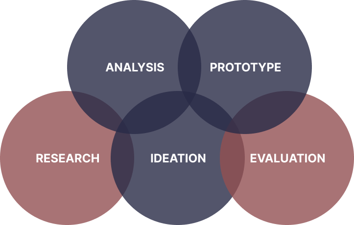

People feel unprepared when attempting to explore the outdoors.
TrailScout
Your own personal guide to the outdoors - for beginner and intermediate outdoorsman.
TrailScout
User Experience Design
Adults who enjoy the outdoors often feel unprepared when making their journey on a hiking trail. TrailScout connects hikers with a trusted contact so that you can feel at ease while exploring the outdoors.
View Figma Prototype >
Design Role
- UX Design
- UI Design
Deliverables
- User Surveys
- Competitive Analysis
- Personas
- User Journey
- User Stories & Flows
- Wireframes
- User Testing
- Visual Design
- Competitive Analysis
Tools
- Figma
- Miro
- Photoshop
OVERVIEW

THE MAIN
Problems
Information on trails found online can be inaccurate.
It’s difficult to prepare for the potential dangers on a trail.
OUR PRIMARY
Insights
Most of our respondents said that they love the outdoors and getting a chance to go outside after a hard day at work indoors. They enjoy the nice scenery and facilities, however, they are often concerned with getting lost or coming face to face with a threatening animal, insect, plant, or person. Most respondents said they use Google or social apps to learn about and prepare for a hike on a trail.
OUR
Solutions
1. Create an app that shows trails in your area.
2. Connect hikers with a trusted contact in-case of an emergency.
3. Implement a Safety Mode which can ease the minds of hikers while they’re on their adventure.
PROCESS
OUR
Assumptions
We then made some general assumptions about people and finding healthcare providers.
1. People find it difficult to find a healthcare provider;
2. They don’t want to spend a lot of time and energy finding a healthcare provider;
3. Finding nearby doctors that are credible is difficult;
4. People are often taken off guard by the price of healthcare services.
In a post-pandemic world, people are leaving their homes less and less, especially to go see the doctor. Finding the right doctor nearby is often very complex and overwhelming for individuals.
THE
Research
To better understand the users needs regarding hiking, my team and I conducted several rounds of user interviews.
10
User Interviews
12
Interview Questions
40.5%
of people use park maps and trail maps as their resource to prepare for a walk/hike.
55.4%
of people have safety as a concern when it comes to hiking/walking.
23%
of people go hiking alone.
18%
of people use nothing to prepare for their hikes/walks.
Key takeaways from our user interviews:
1. Users are concerned with getting lost and coming face to face with a threatening animal, insect, plant, or person.
2. Users are interested in joining others in their community to go on trails and share information.
USER
Persona
My teams user interviews gained us very valuable user insights which we then used to form a user persona. The main goal of the persona is to display those patterns and pain points, which then allowed us to further empathize with users.
Considering Taylor’s goals and pain points, the main theme is to simplify the process of finding trail information for users while taking into account the potential dangers on the trail.
USER
Journey Map
By creating a user journey map I gained a better understanding of the users’ expectations and their experiences while finding a trail without our app.
HIGHLIGHTS
Competitive Analysis
To create a unique value proposition for TrailScout, I analyzed our top current competitors. TrailScout offers the main features that our competitors provide to users while our app is more accurate and doesn’t require any extra fees to use.
USER STORIES &
User Flows
After conducting market and user research, it’s time to highlight the features of the product. The user stories were used to create User flows, which were done in Figma, to show how the user would interact with the product to accomplish their goals.
As a new user, I want to sign up and learn about the app and its features.
As an existing user going on a hike, I want to track my hike and turn on Safety Mode.
As an existing user that is on a hike with Safety Mode on, I want to end my hike.
WIREFRAMES & TESTING
WIREFRAME
Hand Sketches
We began the design phase by hand sketching some ideas for TrailScout’s features.
MIDFI
Wireframes
We then created basic wireframes to have a defined template of the screens.
USER
Testing
My team and I conducted 6 user tests to test the functionality of the application.
Some users wondered if their emergency contacts would be saved or not, so we added a feature where you can choose from existing contacts and also add more.
Some users wondered about what the messages sent from the app would say. So we decided to include a preview of the message that would be sent when you begin a trail, are in an emergency, and when you finish a trail.
PROTOTYPE
Next Step
Next, we would update the “Nature Facts” tab with helpful information about plants and animals that may be encountered on trails. We would also develop a “Community” tab/feature where users could connect with others and form their own groups.


Lesson Learned
While working on this project we learned that scope-creep is a real thing and that it’s okay to save good ideas for later use. We also learned that people love the outdoors but find it difficult to find new spots to explore that are safe and accessible for their skill level. Meaning it’s more important than ever to have recommended trails and accurate maps.